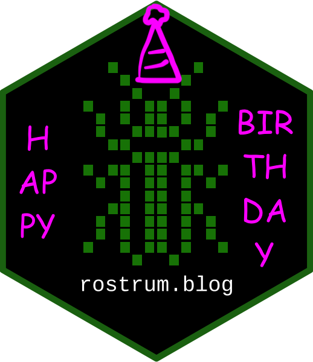

tl;dr
Happy first birthday to this blog.
One year, visualised
There’s been 27 posts on rostrum.blog in its first year, so about one every two weeks.
This interactive graphic shows the publishing frequency, where each dot is a post and the x-axis is time. Turn your mobile to landscape mode to see it in full.
Expand for code
# The data for the plot was scraped using {rvest} and visualised
# with {ggplot2} and {plotly}.
# Load packages
library(dplyr) # data manipulation
library(rvest) # web scrape
library(stringr) # string manipulation
library(lubridate) # deal with dates
library(ggplot2) # plots
library(plotly) # interactive plots
# Scrape the rostrum.blog home page
html <- read_html("https://rostrum.blog/") # the site's homepage lists the posts
# Extract the post titles
title <- html %>%
html_nodes(".archive-item-link") %>% # node identified with SelectorGadget
html_text() # extract the text from the node
# Extract the post dates
date <- html %>%
html_nodes(".archive-item-date") %>% # element with the data we care about
html_text() %>% # convert to text
str_replace_all("\n|[:space:]", "") # replace newline-space with blank
# Dataframe of titles and dates
posts <- tibble(title = title, publish_date = date) %>%
mutate(publish_date = ymd(date)) %>% # make column datetime
arrange(publish_date) %>% # order by date
filter(publish_date < "2019-04-14") # only posts before this one
# Create plot object
p <- posts %>%
mutate(count = 1) %>% # dummy to indicate a post was made
ggplot(aes(x = publish_date, y = count, label = title)) +
geom_point(color = "#1D8016") + # match the rostrum.blog green
theme_void() + # strip plot elements
theme(panel.grid = element_blank()) # to stop plotly rendering grid
# Object telling {plotly} not to do axes, etc
ax <- list(
title = "",
zeroline = FALSE,
showline = FALSE,
showticklabels = FALSE,
showgrid = FALSE
)
# Pass the plot object to plotly (actually performed outside this code chunk)
ggplotly(
p, # plot object
tooltip = c("publish_date", "title") # add mousover info
) %>%
layout(xaxis = ax, yaxis = ax) %>% # remove axes
config(displayModeBar = FALSE) # don't show plotly toolbarMore to come
You can continue to expect more posts about important topics like Pokemon, Dawson’s Creek, Kanye West, the National Basketball Association, Star Trek and dead deer.
I hope you’ve learnt something new about R, like how to begin using it, how to create reproducible reports, how to create interactive maps, how to build network graphs, how to webscrape, how to build simple serverless apps, how to debug tidyverse pipelines, or just remind yourself that you can do it.
Environment
Session info
Last rendered: 2023-08-02 16:37:01 BSTR version 4.3.1 (2023-06-16)
Platform: aarch64-apple-darwin20 (64-bit)
Running under: macOS Ventura 13.2.1
Matrix products: default
BLAS: /Library/Frameworks/R.framework/Versions/4.3-arm64/Resources/lib/libRblas.0.dylib
LAPACK: /Library/Frameworks/R.framework/Versions/4.3-arm64/Resources/lib/libRlapack.dylib; LAPACK version 3.11.0
locale:
[1] en_US.UTF-8/en_US.UTF-8/en_US.UTF-8/C/en_US.UTF-8/en_US.UTF-8
time zone: Europe/London
tzcode source: internal
attached base packages:
[1] stats graphics grDevices utils datasets methods base
other attached packages:
[1] plotly_4.10.2 ggplot2_3.4.2 lubridate_1.9.2 stringr_1.5.0
[5] rvest_1.0.3 dplyr_1.1.2
loaded via a namespace (and not attached):
[1] gtable_0.3.3 jsonlite_1.8.7 selectr_0.4-2 compiler_4.3.1
[5] tidyselect_1.2.0 xml2_1.3.5 tidyr_1.3.0 scales_1.2.1
[9] yaml_2.3.7 fastmap_1.1.1 R6_2.5.1 labeling_0.4.2
[13] generics_0.1.3 curl_5.0.1 knitr_1.43.1 htmlwidgets_1.6.2
[17] tibble_3.2.1 munsell_0.5.0 pillar_1.9.0 rlang_1.1.1
[21] utf8_1.2.3 stringi_1.7.12 xfun_0.39 lazyeval_0.2.2
[25] viridisLite_0.4.2 timechange_0.2.0 cli_3.6.1 withr_2.5.0
[29] magrittr_2.0.3 crosstalk_1.2.0 digest_0.6.33 grid_4.3.1
[33] rstudioapi_0.15.0 lifecycle_1.0.3 vctrs_0.6.3 evaluate_0.21
[37] glue_1.6.2 data.table_1.14.8 fansi_1.0.4 colorspace_2.1-0
[41] purrr_1.0.1 rmarkdown_2.23 httr_1.4.6 ellipsis_0.3.2
[45] tools_4.3.1 pkgconfig_2.0.3 htmltools_0.5.5 Reuse
CC BY-NC-SA 4.0